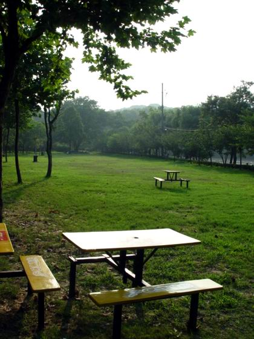
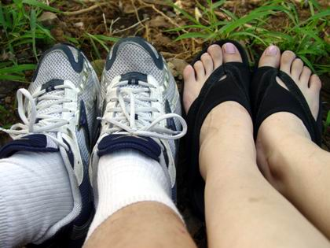
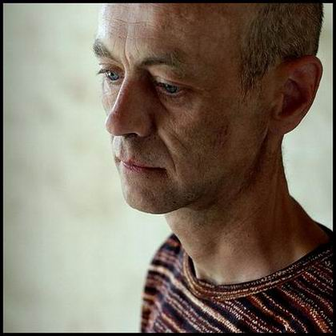
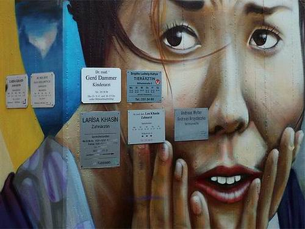
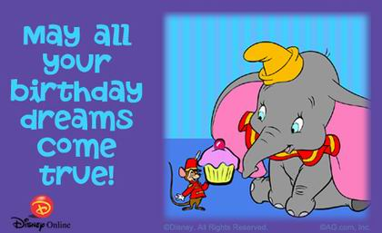
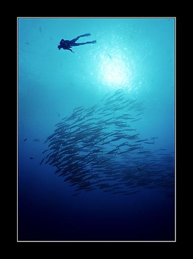
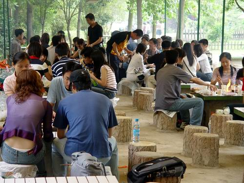
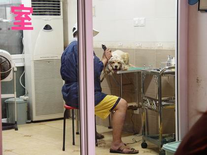
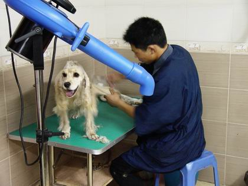

Archives : 2004-06
徐州行 @ Jun 28, 2004


东郊的傍晚 @ Jun 28, 2004



换个心情 @ Jun 23, 2004
昨晚和DAVID在家附近的饭店吃完晚饭，两个人开车出去兜风，昨晚我第一次开MOD，开车前他大概向我讲解了使用功能，当时我一点也不紧张，这比开驾校的手动挡车要好操作的多。DAVID开始关注SUV了，除了照旧买每期的《汽车》杂志外，每天早晨还听听广播里有关汽车的介绍。
早晨换了CHANNEL 5号的香水，自从3月以来第一次换香水用，好象换了一种生活的感觉。换香水是为了配合今天的穿着。MAVIS偷偷在MSN上问我：“还能告诉我你今天穿的是什么衣服啊？”其实也就是一条裤子外面加了条裙子，的确很时尚的设计，整体偏灰色，裙子由一些条纹、色系相近的图案拼接起来。另外还有条连衣裙也可搭配这条裤子穿。过去，我经常把好看的衣服留在晚上泡吧或者休息不上班的时候穿，因为这是中国社会，即使在这样的公司里周围同样拥挤着街头巷尾的嘴脸和吐沫。时常我觉得我不是为自己活着，但心里却又不甘。

你说...... @ Jun 22, 2004
你对我说：“做一个男人女人都喜欢的男人女人是很难的。北美的电视台主播，大都是选这样的人。你要是能看到，可以研究一下她们的特点。不然的话，管它呢！我一直相信，人人都喜欢的人一定不是好人。”
父亲的表情 @ Jun 21, 2004





骑车去意大利 @ Jun 21, 2004
听母亲讲北京的大舅舅参加从北京骑自行车去意大利的活动,北京一共十人,不知道现在是否已经出发?大舅舅长得有点象陈道明,眼神很迷人,他一直都热爱摄影,曾经在90年代初一个人骑摩托车到海南等地采风!过去很多年他一直在做医疗器械药品生意,现在去了卫生部.
世上只分两种人 @ Jun 19, 2004
现在浑身在冒虚汗,外面下着雨,已经不想继续躺在床上。一个人呆着的时候，总是很难管住自己的思绪，有些人有些事已经不用再想......
躺在床上休息的同时看完金城武主演的《Sleepless Town不夜城》。那个长漂亮乳头的小莲最终还是使健一（金城武饰）爱上了她，小莲太清楚自己需要什么，为了达到目的不择手段。最后小莲为了保下她自己的性命，也会开枪杀健一......这种爱情必然是悲伤的结局，小莲死了，健一开枪把她杀死在他自己的怀里，漫天下起大雪，健一不知道抱着小莲在雪地呆了多久。从那以后健一变成一个不再谈感情的人，他在黑帮的地位也越来越高。健一说：“世上只分两种人，骗人的人和被骗的人。”
Every Breath You Take -Sting @ Jun 18, 2004
Every breath you take and every move you make
Every bond you break, every step you take
I’ll be watchin’ you
Every single day and every word you say
Every game you play, every night you stay
I’ll be watchin’ you
Oh, can’t you see
You belong to me
How my poor heart breaks
With every step you take
Every move you make and every vow you break
Every smile you fake, every claim you stake
I’ll be watchin’ you
Since you’ve gone I been lost without a trace
I dream at night, I can only see your face
I look around but it’s you I can’t replace
I feel so cold and I long for your embrace
I keep cryin’, baby, baby, please
Oh, can’t you see
You belong to me
How my poor heart breaks
With every step you take
Every move you make and every vow you break
Every smile you fake, every claim you stake
I’ll be watchin’ you
Every move you make, every step you take
I’ll be watchin’ you
《Some Devil》 @ Jun 17, 2004
 专辑名：《Some Devil》
专辑名：《Some Devil》
演唱者：Dave Matthews
发行时间：2003年9月23日
发行公司：RCA
音乐风格：Adult Alternative Pop/Rock（成人另类流行/摇滚），American Trad Rock （美国传统摇滚）
唱片点评：这是Dave Matthews这名主唱兼吉他手第一次发行个人专辑，但是销售成绩丝毫不亚于他的乐队发行的专辑，发行首周的销量就达到46万9千多张，成为了Billboard 200排行榜的亚军，单周的销量和排行榜的名次都仅次于他们乐队2002年的专辑《Busted Stuff》，当时他们曾经以62万2千张的首周销量成为了排行榜的冠军。
Dave Matthews和他的乐队的音乐比乡村和传统摇滚更为流行化，同时又受到了Paul Simon和Sting的影响，略微带有民谣色彩和大众化的流行口味，某些方面和The Black Crowes乐队以及The Wallflowers有几分相似。在这张专辑中，Dave Matthews与一支交响乐团合作，共同演奏了开篇第一首歌《Dodo》。贯穿整个专辑的是Dave Matthews痛苦的声音，这一点和Radiohead的特点有一些相像，在《Too High》这首歌表现的颇为明显。Dave Matthews的哀鸣成为了专辑中许多歌曲的主音，不管是喜悦的内容还是悲伤的旋律，只要Dave Matthews发声就定然是一副痛苦的感觉，即便表达爱情也是苦恼至极。Dave Matthews还在专辑中展现了他演奏乐器方面的多才多艺，电吉他、原声吉他，中音吉他，锡塔琴，打击乐器等多种乐器都由他亲自演奏。
这张专辑在风格上和Dave Matthews的乐队并无太多变化，但是汲取了爵士乐一些元素，有了乐队积累下的忠实拥趸，想要在销量上取得成功并不是什么困难的事情，但是很难在评论界获得较高的评价，不过对于Dave Matthews本人来说，这张专辑还是他个人专辑上一个非常不错的开始。
歌手介绍：1967年1月9日，Dave Matthews出生在南非的约翰内斯堡。1991年他在美国弗吉尼亚州招揽了Stefan Lessard，Leroi Moore，Boyd Tinsley和Carter Beauford这几个人，组建了自己的乐队the Dave Matthews Band。起初Dave Matthews和他的这支乐队并不为人所知，但是通过在美国大学校园内的一系列的巡回演唱会，乐队和Dave Matthews本人的知名度一步步地扩大，并且初步拥有了一些固定歌迷的支持。1993年，乐队在美国各地的巡回演唱会结下了果实，他们独立发行了一张现场专辑《Remember Two Things》。随后他们就引起了一些大的主流唱片公司的注意，RCA唱片公司最终和他们签约。
1994年，Dave Matthews和他的乐队的第一张录音室专辑《Under the Table & Dreaming》正式发行，并且在第二年成为了白金专辑，到了1997年10月，已经被美国唱片工业协会(RIAA)认证为五白金专辑了，而现在它的销量早已突破600万张了。1996年4月，the Dave Matthews Band发行了第二张录音室专辑《Crash》。这张专辑打入了Billboard排行榜的前三名，并且在随后乐队的巡回演唱会的推动下，这张专辑的销量节节攀升，同时Dave Matthews本人还致力于一项和联邦政府一起打击私酒贩卖的活动，这一活动为他赢得了更大的支持，这项活动也取得了重大的成果，几乎把美国国内的地下私酒生产和销售系统等整个地下私酒产业连锅端掉。而专辑《Crash》的销量也令人惊奇，超过了《Under the Table & Dreaming》，至今已达到将近800万张。在参与公益活动的同时，the Dave Matthews Band乐队还发行了一张双CD的现场专辑《Live at Red Rocks 8-15-9》，也许是由于公益活动所带来的无形价值影响，这张很普通的现场专辑居然也进入了排行榜三甲，并且在五个月时间内就成为了白金唱片。
前几张专辑的成功和演唱会的影响力，使the Dave Matthews Band于1998年发行的专辑《Before These Crowded Streets》和1999年的现场专辑《Live at Luther College》获得了不同程度的高销量。之后又在2001年和2002年在著名制作人Glen Ballard的协助之下，录制并发行了第四和第五张录音室专辑《Everyday》和《Busted Stuff》以及三张现场专辑，单曲《When The World Ends》还入选了电影《黑客帝国2》的原声大碟。随后的日子里，Dave Matthews致力于自己个人专辑的制作，2003年9月23日，Dave Matthews的第一张个人专辑《Some Devil》终于发行。
在1996年度第39届格莱美奖中，Dave Matthews的乐队凭借专辑《Crash》中的单曲《So Much To Say》获得了最佳摇滚组合奖(Best Rock Performance By A Duo Or Group With Vocal)。(CatCobain)
走近法国女人的性生活 @ Jun 17, 2004
法国女人. 除了少部分丑陋的, 大部分法国女人在 15岁到20岁就已经 发生了性行为 , 很多法国女人的人生目标之一就是追求性高潮的快乐,笔者的一个法国女的朋友,21岁已经有6个男朋友上过床。法国电视RTL到了晚间都是三级片,充分教育了这个国家的女人如何主动地挑逗男人。
法国年轻女孩的穿衣时尚之一就是漏出底裤(低腰裤子)和乳沟 /很多女孩是不戴乳罩的/,或者在腰部乳部刺青，部分地区的女孩以鼻孔眉梢嘴角穿洞扎针为酷，夏天的海滩上的法国女人如果觉得自己是波霸就会去晒乳。一部分法国女人喜欢非洲强壮男人,理由就是性的快乐，法语俚语中关于性的词语实在登峰造极，对于这么一个小国而言。按照东方的定义，相当一大部分法国年轻女人都是婊子，也是这个自我感觉良好的国家不思进取，懒惰纵欲的表现。
法国的年轻人吸大麻的比例甚至高达30%。很多大学生的派对就是吸大麻，酒精，性乱。经济停滞不前，高失业率令年轻人无所事事，就知道为抽不起香烟而游行示威，笔者在法国甚至有1/3到一半的香烟都派给向我乞讨要烟抽的陌生法国人了。法国人的平均身材在西欧并不见得高大，笔者就比一半的法国男人高和重，但偏偏有些法国人会讲矮小中国人，大概是遍布法国的很多越南柬卜寨人开的餐馆也冠名中国餐馆，而他们很多都比较矮小但都被当成中国人的形象。
就笔者的个人体验， 170C M身高法国女人的性需求，一个中等强壮的中国北方男人就足以满足她，甚至可以做到她叫免战牌。法国男人，因为种种原因，缺少锻炼吸大麻等等，有不少矮小的，性功能一般，据嫁给法国男人的中国女人讲，也就平均20分钟交卷。但可惜的是大部分黄种男人不太喜欢或不太敢于追求进攻白人女人，实在是一种遗憾。
作者：锋利黄人
原文来自http://www.myfrfr.com/
真的烫发了 @ Jun 17, 2004
我在办公室打电话的时候MAVIS拍的~~
new hair style for you @ Jun 14, 2004
烫了一次性的头发，觉得面孔一下生动起来。晚上他开车载我去吃韩国料理，饭间他笑着问我：“晚上你是不是要在街上逛到12点才能回家啊？不然不是可惜了这个头发......”我明白他在讽刺我“臭美”。知道女人最大的痛苦是什么吗？就是让她穿上最漂亮的衣服然后把她关在房间里~~
有个在法国读书工作的妹妹曾经在给我的信中这样写到:“我现在觉得来到法国之后，确实许多想法和观念都产生了变化。在欧洲国家，所有女性的打扮装束都会向30岁靠拢，而在中国和日本就不是，可能更喜欢23岁左右的样子，光这一点就已经挺different了，更不用提其它的了。”
你要什么我都给 @ Jun 13, 2004
《你要什么我都给》—黄国俊
 无法入睡 我会
无法入睡 我会
温温冷去的回忆做为安慰
你舍弃一切为他去追
爱再苦不气馁
你对真爱的无悔连我都觉得惭愧
我太软弱 太灰
同样面对爱我却选择撤退
不像你的顽强我总一再受感情支配
得不到的爱 很美
宁愿自己去崩溃
天色已经转黑 明天再飞
我懂你的眼泪只为他坠
为你泡杯咖啡陪你尝苦涩滋味
只要是你觉得对
你要什么我都给
我的心也转黑该往哪飞
知道你这一回走的乾脆
你我在这一夜无言无语的交会
我的心支离破碎
让我再也无力去等谁
最美好的事 @ Jun 13, 2004
困了，睡觉去。
吃和睡，是世上最美好的事。
爱情本色 @ Jun 13, 2004
这世上大多数的事情，都可以找出“是非”与“对错”。惟独爱，有那么多种滋味，有那许多纠缠不清的情怀，更有着无限的因果和矛盾。
爱，无所谓对错。它只是发生、只是遭遇！
越南统一不久，报上刊载：一位美国驻越南记者冒着生命危险游过同奈河，进入已经被北越攻克的西贡市，救出他的越南情人。我很佩服这位记者，因为他的表现不是激情，而是深情—一种对爱情负责任，死而无悔的牺牲之爱。
father and child @ Jun 13, 2004

喜欢这张图片，孩子在父亲的怀抱里，给观者带来的心灵冲击与母亲拥抱孩子的感受不同！我爱这孩子，也爱抱着孩子的男人给予我的那种暖暖的感觉......
匆匆过客就象沙漠一样，最是无情 @ Jun 12, 2004
一个朋友从Chiense Tea上消失很久之后，今天在MSN上冒出来，把他自己的BLOG介绍过来，令人惊喜的是他找到了他所爱的女人，祝贺他！下面转载他写的一篇有关“Chinese Tea”的文章：

初识Chinese Tea是两年多前的事了。知道有blog也是从那开始。也是很无意的看到了5460上Christina留的言，一个Chinese Tea的广告。
我无意窥探别人的生活，但这块空间却的的确确展现给我一个女人精致的一面。于是渐渐地我也融入进来。世界如此之小，在这里我竟然还遇到了我的同事Wang Jianshuo。当然还有我们中学的不少同学。
“写点什么吧！”这是同Chiristina谈话，最常听到的。2年后的今天，有一个人也对我说了相同的话“写点什么吧！老公来一段、老婆来一段多好。”
失去Chinese Tea，是因为LD，当我们自私地享受着恋爱、新婚的甜蜜时，Chinese Tea在悄悄的搬迁。找回Chinese Tea，也是因为LD。大概是是为了同所有的朋友分享我们的快乐，LD也迷上了Blog。通过Blog，通过Amy的Blog，她发现了Chinese Tea。“这个世界多奇妙！”LD也如同发现了久违的老友一般。
今天又一次在Chinese Tea上留言。物是人非，不知道当时的朋友有多少还在这里。Anyway，Christina能执著地将一件事坚持这许多年，本身就是一个成功。
这会儿突然想到《新龙门客栈》，我们这些曾经的匆匆过客就象沙漠一样，最是无情。既然金香玉已经有了她的周淮安，Christina会不会有一天一把火烧了Chinese Tea？
笑到心深处 @ Jun 11, 2004
原来笑和哭竟然是邻居。哭疯了狂笑，喜极了哭泣。
只是，哪一阵子笑之后不是平静？
哪个平静中，又没有不堪回味的悲凉？
放声大笑的人似乎嘴角都不怎么弯，那嘴角弯到耳边的，反倒笑声小。只是读国外的研究报告，说放声大笑的人，实在不见得真开心，愈是笑的豪放，心里可能愈空虚。我开始检讨，自己的笑里有多少真值得笑的事？

你快乐吗？—朱德庸和陈村的一次对话 @ Jun 09, 2004
朱德庸：快乐有时候是可遇而不可求的。我记得以前在念书的时候，考试的前一天，几个同学约在一起读书吧，买一些酒啊小菜啊，一边喝酒一边读书。读不到十分钟开始聊天。聊的时候越聊越开心，开心得不得了。酒一直喝，小菜一直吃，大家一致同意说这么开心的事情，等下回考完试之后特别约一天买好酒买好菜。考完试之后，买好酒买好菜放在那里，几个人打坐。话都没有。
我以前喜欢听音乐，坐在那里一首一首歌放着听，一听四五个小时。你觉得很开心。现在如果一首首歌听，听半个小时吧，内心不安了。都一把年纪了，还坐在这里浪费时间，干吗呢!以前是单纯地听音乐，歌啊旋律啊，你听了非常开心。现在不是，听一首歌，就想到这首歌是二十年前听的。你马上接下来想到，二十年这么快就晃过去了，想白头发，想很多。
陈村：杂念很多。
朱德庸：快乐越来越不单纯了，越来越难了，你很难刻意地去经营它。你很难说，让我过得很开心很快乐。其实你知道，会让你快乐的事情是什么，都像高潮一样。前面你还要一番苦心啊……
陈村：前戏。
朱德庸：前戏啊，然后你只能感觉短暂的一下子。很快地你被污染了。好像我年轻的时候喜欢泡澡，泡澡的时候还会准备一瓶酒，准备一些水果放在澡缸边边。
陈村：电影里看来的。
朱德庸：(笑)然后就泡在那里，喝点酒啊，吃点葡萄啊，泡一个下午，泡得皮都皱了。我是想，过了那么久了，也应当稍微慰劳一下自己。当时这样非常快乐。现在想，还要出去买酒好麻烦，弄了水果还得洗。以前弄了水果把盘子地上一放，现在一放你觉得地上太脏了。然后你好不容易搞好了，躺下去之后吃一颗葡萄喝一口酒，好像快乐就没了。就这么一下子。这享受你划得来吗，好像花了十分的力，得到一分的快乐。
陈村：你这是想做出来，快乐有时候是“撞见”。你刚才讲越来越难，你花了很多工夫，前戏也很多，到最后这事儿干不成，到最后不行，自己弄得很沮丧。本来我是要经营一个东西，慢慢进入高潮，主角不出场，没有高潮。
朱德庸：我真是觉得，我有时候也常常想说，快乐到底是什么，怎么样才能得到快乐。我自己思考很久，现在越来越觉得不快乐。很奇怪，那种感觉很自然的，你并不能强迫你自己说服你自己，这快乐用什么方法去得到，这好像永远只是一个理论的，永远没有办法去落实。我在想说，是不是人到了一个年龄，经历了很多的事情，在你的人生当中，杂质越来越多的时候，快乐的本身越来越不单纯，越来越少。
陈村：它本来是直接得到的。
朱德庸：我自己想这快乐想得很久，非常久。我曾经在工作里面得到很大的乐趣满足，一直画，一直画，一直画到自己觉得精神衰弱一样。开始觉得工作已经不快乐了，画画也不快乐了。虽然在画的过程里面你觉得这很好玩，你会想说你很棒啊，可以无中生有，你可以想出一个，慢慢觉得佩服的成分变高了，快乐并没有跟着那个。差不多有两年的时间，我有点接近半退休。我每天早上起来赶快把该画的东西画完，把活干完，交差了，之后我觉得什么事情都不想做。本来你在很忙的时候你会想说，我要是没那么忙，忙完这一段之后我去过什么样的生活，我要整天晃着，脑袋空空的。你想想就很快乐，但实际上去做的时候，发觉完全不是这样。当你把自己完全空下来之后，你发觉感觉上不是快乐，感觉上是一片混乱。你坐在那里丝毫不感到空闲带给你的快乐，只会觉得很乱，好像所有事情在强暴你，就直接那么进来。一下子想到这个事，一下子想到那个事。
陈村：快乐应该很傻的，无所事事的，无所用心的，很投入很专心的，没心没肺的。你就会突然有快乐。
朱德庸：你能做到吗?
陈村：我有时候，看到好玩的东西，突如其来的快乐，一下子很高兴。
朱德庸：你有没有把你一天中，你认为你很快乐的一个比例，一天中占的有多少?
陈村：它不是每天出现的。但肯定是很少。它是亮色。一面墙，像这种不好的空间才会四面透光。好的空间四面是墙，有的地方透光，透光的地方你觉得挺好。生活也一样，生活有亮色，等于人家画画的人有高光，不能到处都弄得是高光，到处是高光就是美女照了。有点高光，画面比较精神。它的来到也是突如其来的，一下子忘乎所以。
朱德庸：我常觉得快乐是可遇不可求的。不晓得快乐什么时候来，来了能维持多久，完全不知道。
陈村：我看你《双响炮》。朋友借给我的，他跟我说有个人画得很好玩。一般我没有很大的期待，人家向我推荐的东西很多，一边看一边觉得很快乐。这上面都是一些傻乎乎的事情和傻乎乎的人，人显得很俗气。一定要俗气，家庭生活就是俗气的。又有些走出俗气蛮有意思的意味，很好玩。也不是装傻。装傻被你识破了也很无趣的。有点窃喜。有点占了人家小便宜似的。
朱德庸：快乐是一种单纯吧。你不抱任何期望。反正你很自然地就看了。
陈村：你生活中有些经验和它呼应的。你不会去想，花了很多时间精力啦，这书拿过来怎么不容易啦，你很专心的。而且也没什么任务，没人逼我一定要去看，我看了也没什么好处，不是写文章要换钱啊，都没有。看着玩玩。嗬，这里面两个家伙不是在胡闹吗。
朱德庸：我自己也想说，为什么感觉快乐越来越少呢?当我年轻的时候快乐比较容易。用以前的标准以前的方式，事实上你已经过了那个年龄那个时期了，可你还拿旧的东西作为你寻求快乐的坐标，但事实上完全变了。你大了以后在你人生里，你没寻求到……
陈村：快乐是一个点，本来是不连的。你在这里快乐，快乐完就完了。现在有些东西你会延伸要推理，把它弄出来。小时候初生牛犊见了老虎也很快乐，大一点了，明天要去看电影，很快乐。现在不对了。现在即便今天看电影，今天给你买个车，也没有小时候的急切了。快乐有点像初恋的感觉。我喜欢某人，想给她写信，又不敢写信。现在不是这样了，打个电话就行了，又弄出有经验的有城府的人的办法去处理。小时候怀着诚惶诚恐的心情，去接近一个事情。这事情使你很投入很专心，不能自己，不肯罢休。现在追求一个人，追求到了又怎么样，好不容易做点事情，要么不把人弄回来，人家和你吵架，弄回来黄脸婆又出现了。种种延伸的东西都出现了，以后会出现什么都知道了，都有警惕了。
朱德庸：快乐就是这样，能够拿的时候赶快拿，不要等以后。
陈村：真的一想就不快乐了。本来它是很快地来的，快乐，不是慢乐。突然袭击一样，乐不可支的。我现在不好了。以前看到什么事哈哈大笑，现在很少哈哈大笑，更不会把眼泪笑出来。笑的时候注意形象注意场合，不要太放肆了。(指记者)跟她不一样，她笑得像猫头鹰一样。
朱德庸：会不会有人天性就是快乐的，有人天性就是比较不快乐的。
陈村：有些人喜欢忧愁，从坏的地方想问题。他已经成为一种习惯了。我想人到老了以后，我到老了，比较不想名利，不想女色，可能比较好了。就等死了吧，也不想买楼啊，周游世界啊，念头没有了，那时候可能比较放松。
朱德庸：(笑)那时候也快死了。
陈村：可能也无所谓了，这死摆在你面前，赖不掉的。我真的看到蛮快乐的老头。快乐就是人家觉得你不值得这样，你非要这样，你的反应超过了别人预期的反应。看电影拍手拍脚地笑，别人看起来你很傻，但你快乐。球迷，看到主队进球了，欢呼，真是高兴啊。旁边没有感觉的人，觉得你干吗呢，那个球进去不进关你什么事。很多感觉是独享的，不会我很快乐，你也很快乐，大家分享。这不是蛋糕，没法分享。
朱德庸：快乐确实很难分享。它又不像一个笑话。
陈村：年纪大一点了，会转化为喜悦，欢喜，变成比较安静的快乐，默默的快乐。
朱德庸：怕是结婚以后才能享受安静的快乐。
陈村：你坐在那儿看山看水，好看，蛮快乐的，欢喜的成分多些，不是傻乎乎的高兴。
朱德庸：我自己觉得人慢慢大了，生活里面的杂质越来越多，欲望什么很多很多。以我自己在台湾，看看朋友，按以前的标准他们都达到可以快乐的境界了，但都不快乐，没有一个人快乐的。很奇怪。上一代的人，有饭吃有地方住，就很开心，非常知足。我们这一代就很难，非常难。我朋友住得很好，车子开得很好，把可以变卖的东西变卖掉的话，他可以一辈子生活无虑的。但他一点都不快乐，他还是觉得这个没有那个没有。他已经拥有的东西，他觉得对他是一种负担。但你让他真的把东西丢掉，他没法丢，丢了一点不快乐。
陈村：这快乐是欲望煽起的。你以为满足了欲望就快乐，但欲望后面有更大的欲望。有车还想有更大的车，有游艇。买了房子以后还要想，像昨天晚上说的买岛。有漂亮女朋友外面还有更漂亮的人。这些使得你变得更穷了。我小时候看一些老头在树下下象棋，吃掉人家一个子，洋洋得意，拿很大的蒲扇，光着膀子，穿老头裤，坐小板凳上下棋。旁边围着一群老头看棋。
朱德庸：我看到一个人无所事事，在马路上晃，我觉得他很快乐。我知道我变成他那样会非常快乐。但你知道你不可能变成他那样。你只能在旁边想像他的快乐。自己没办法。我看自己，什么事情都要无中生有，很累。看人家开一小杂货铺，或在邮局埯做事，每天脑袋也不用想，有信就盖个章。我想当时自己为什么不好好念书，考到邮局里去盖个章就好了。
陈村：人像动物的时候比较快乐。你像人了，就不快乐。文明教育让你不快乐，给你很多压力，让你掌握很多可能没有的东西，给你很多欲望，教导你说，人家活得多好，你要像他那样。你就不快乐。而且好像整个民族不快乐。本来其实也蛮快乐了，上代人一年吃一两只鸡，现在喜欢吃鸡就可吃鸡。可是这代人觉得鸡不是什么好东西，用一个个层出不穷的东西来难为你自己。
朱德庸：昨天吃饭时候在聊天，我对他讲小时候看美国的电影电视。他们泡澡，很多的泡沫，起来用毛巾一擦也不冲，哇，真好。我用我妈妈的洗衣粉，拼命打出泡泡，打得很辛苦，好不容易打好了就泡。就和美国片一样，起来也不冲，毛巾一擦。很满足很快乐终于像他们一样了，结果抓了一夜。一直到很大了才知道，那叫泡沫浴，是不一样的。
陈村：我们生活里也在拼命打。我们经常做的动作还是打泡，你以为今天不打了?你拿的是肥皂粉，你以为是沐浴露，拼命打，打出几个泡就钻进去，以为跟美国人一样，然后起来就抓。
朱德庸：我觉得杂质太多。像你讲的，你已经有太多的批判吧。对任何事情已经有很多想法了。新天地，在台湾报纸上就讲到，新天地有多好，怎样规划。到上海我非常期待来这里，我会非常开心。我一下车看了第一眼我就不快乐。这地方跟我原来快乐的感觉距离非常远。整个是做出来的，并不是一种自然的。像我们小时候热闹的地方是自然形成的，它里面有很多让你开心的事情，一切都那么自然，你没有任何期待，尽情在里面去感受那些事情。现在做出来的，你来这儿一点都不觉得快乐。
陈村：这地方对这空间里的人有压力。它是我们经验以外的东西。外墙，那么新的门楣的样子，布光的格局，都使你必须要循规蹈矩，不能把脚丫子跷到上面去。让你……
朱德庸：我现在知道新天地的一个问题在哪里，说了他们要把我们赶出去。另外一个压力，我给你找快乐的，给你弄一个地方让你快乐。
陈村：凭什么你敢不快乐?
朱德庸：当你不快乐，想我怎么回事啊。你一旦觉得不对就怀疑自己，一怀疑自己就不快乐了。
陈村：为了证明你的身份，你必须要到某些这样的场合去，你是高雅的嘛，哪能在街头。
朱德庸：可能你根本就不是高雅的。硬要把你放到高雅的地方，你就不快乐了。我一下来，两个印象。第一个印象是迪斯尼乐园，做出来的。每二很像新加坡的克拉码头，像游乐场一样，全是做出来的，你来快乐。
陈村：你也可能快乐，跟你身边的人。一群年轻的人跑来，他们忘乎所以。我们这种人无所事事，眼睛东张西望。把人跟人的东西变次要了，你在这环境中抵抗它的压力变得重要了，所以你就会时时感觉到它的存在。
朱德庸：刚才谈到画画，我常和人开玩笑，说是我卖笑的，这么一讲，和小丑也差不多。小丑也是出场的那段时候笑，下了场可能回到原来。可能像我画画一样，画的时候很好笑，一画完脸就板着。有时候我注意到画的时候脸也板着。画也许很好，但我当时心情也许并不好，非常低落，同样可以表现出职业的水准，跟你内心快不快乐并没太大的关系。
陈村：我有个生活态度，生活可以本质上是不快乐的。作为人，给你规定了一个任务，走出伊甸园以后，你要学很多知识，克服很多动物的禀性，要向上帝学习，去做一个全知全能的那么伟大的东西。这规定了你的不快乐。我讲过一句话：在生活中不失时机地笑笑。总体可能是不好的，低调的灰色的，生活里还会有些给我们钻钻空子的地方。这一生也就这么打发了，不管你再愁苦，再忧国忧民，再幻想宇宙，可能也就这么打发了。我们人还有另外一种东西，比较放松的话，也会很快乐。小小的东西，不要嫌它的小，比如你喝了好东西，和人一场很好的谈话，看乔丹打球，非常高超的东西。本来这些东西都是没用的。人有用的东西，学科学诺贝尔奖的获得者，名声还远不如那些打球演戏的。其实人本能地在拼命抵抗，要求快乐。学者在分析，这种快乐可能是不值一提的，但这是没用的，人不是分析出来的。
朱德庸：我想人有太多不开心的事情，才会思考开心到底是什么。
陈村：变人以后，就像词里说的，独自莫凭栏，无限江山。做人要看无限江山，还会怀念一晌贪欢。人是可以开心的，人是有开心的潜能的。
来源：光明书摘
Dear Nick! @ Jun 09, 2004

Nick，生日快乐！
好不容易找到这张“69”的摄影图片，然后保存下来，准备等你生日这天贴上来。
我12岁的时候认识你，那时侯你还挺瘦的呢，到现在多少年过去了？上次见你是什么时候？你还记得吗？你居然赶在我之前结婚了，郁闷！这几天你的老同桌GRACE正好回来度假，明天又要起程回香港，想来我们几人之间的缘分虽没有那么浓，却未必清淡，这样或许可以保持长久的芬芳！但这芬芳也需要人为的呵护，世间事可以消磨许多许多美好的东西！
你总是比我老的慢，所以当我脸上又长出一道皱纹的时候，我最不愿对你讲，你一直改不了酸溜溜的讲话风格，哈哈~~反正我们每天都在MSN上见面的，知道你活着，并且活得不错，我就很开心了！

天使死于爱...... @ Jun 09, 2004
Wooden Girl

党员会议 @ Jun 09, 2004
刚刚开完会，一个虚伪的党员会议！
我18岁入党的时候真的是报着崇敬的心情，现在我想的是我怎么和这帮虚伪无聊的面孔坐在一起开会的？整个社会都是虚伪，从上到下，我连看“戏”的心情都没有。
背景音乐《鳟鱼》 @ Jun 08, 2004

黄国俊 – 《鳟鱼》
我逆流而上
去寻找逝去的时光
沿途处处是险滩
没把握回到你身旁
想破镜重圆
像鳟鱼奋力倔强
是谁在阻挡命运始终和我对抗
啊 MISSING YOU
爱人好难
过去可否都不算
依然LOVING YOU
路好长
不能让你再（有）绝望
河流太顽强
鳟鱼它什么都不管
爱没有答案
它只是一路往前闯
那是一段最初美好时光
有好多纯真被遗忘
不懂我会粗心大意
把真爱当作像空气样平常
啊 MISSING YOU
爱人好难
过去可否都不算
依然LOVING YOU
路好长
不能让你再（有）绝望
纵然成功只千万分之一
我还是不怕再回去
你永远都是我
我生命的唯一
唯一不能没有的世界
烧烤 @ Jun 07, 2004

从情侣园回来后，妞妞在宠物店里美容洗澡


今天到此为止 @ Jun 05, 2004
Michelle对Alex说，我从来没有爱过你，你忘了我吧。Alex就拿出手枪对着自己的手心打过去，说，没有人可以叫我忘记。毛尖的这篇关于电影和巴黎的文字真是滥。感情泛滥。看看这名字：感谢上帝，我们还有巴黎。什么玩意儿。我第一次看《新桥恋人》是在中国电影资料馆。那么大的宽银幕。看得热泪盈眶。什么玩意儿。哈哈。Michelle和Alex最后终于重逢。这也算一个圆满的收场。其实生活哪有什么结局。或者说每一天都是一个结局。那么，今天到此为止。
勇气 @ Jun 04, 2004
放弃一种坚持， 比坚持，需要更大的勇气。
这应该是和周围的人相比，我离生活那么远的原因。
我终究还是没有足够的智慧。(GOGHS)
随时都想逃离，作好准备，但问自己为何要逃离？能逃到哪里？内心又有什么改变？
周围人的面孔，让我成长......
算命结果说我是：易被利用，理智顽固，感情误事......
我想做的并不是这些，下面我该怎么活着？
...... @ Jun 03, 2004
忠实于我们看到的，忽略那些听到的。
龙虾，龙虾 @ Jun 03, 2004
昨晚我提出去星湖饭店吃龙虾。提到“食欲”，女友们认为食欲好的人性欲旺盛。猛然想起女友们一段经典的对话：
A女：偶今天食欲狂好~~
B女：是吗？那个也很好了？！（坏笑ING）
吃龙虾对他来讲是浪费，他可没工夫仔细拨弄虾壳吮吸虾汁，每次吃龙虾他的脸上都挂着无奈的笑。但还是陪我去了。记得去年我们朋友三人去星湖饭店吃龙虾的经历，记忆犹新的是服务差，好象没有人管理似的，除了龙虾可口外，其他的菜口味均一般。
今年第一次去星湖饭店，还是要等，就餐的人真多，待小姐招呼我们到指定的桌时，那张桌子上杯盘狼籍，等了十分钟在我们的一再询问下才有两三个服务生悻悻然跑去收拾，二楼大厅地上铺着红色印花的羊毛地毯，而桌子四周散落着虾壳纸巾......服务生倒是不少，但服务却完全不符合星级饭店的标准。其中我们点了道菜，叫“鱼脸”，（呵呵，直接叫鱼头好了）上上来居然是臭的。
选择去星湖饭店吃龙虾主要是觉得饭店和大排挡在卫生上应该有所区别，而且就餐也需要一个良好的环境。

星湖饭店2000年开始做龙虾，是南京最早做龙虾的星级宾馆之一，饭店专门成立了一个“研究小组”，让小龙虾具有体面的包装和别具一格的口感。饭店开发出4种口味：清水、红烧、香辣和麦场烤虾，分三个价位：普通58元，精品88元，极品198元。“麦场烤虾”集中西餐饮特色于一身，把奶油与黄油抹在虾身上烤熟，浓浓的麦香随之四处飘散……这种方法或许只有宾馆才有能力做，但也正是这一招使得饭店与排档有了区别，星湖现在一天堂食和外卖总计500余公斤。南京星湖饭店为他们的龙虾注册了“红透”牌商标，还申请了两项龙虾专利。
未知数 @ Jun 03, 2004
下午和GRACE、F见了面，在东大四周及北极阁附近散步聊天，然后一起吃晚饭。
GRACE10号返港，F9月初去法国，他们的前程在一片灿烂的未知数里荡漾。
这种循序渐进剥离的生活令我不安，GRACE和我共同生活的感受已经越来越少，将来我们又是以什么来维系彼此间的友谊？希望她能一直存在于我的生命中，我担心失去她，好似担心失去精神空气的感觉！Y 公司的事情太忙，没能来，但在数码相机里看见他剔短的头发，穿着黑衣牛仔裤，有些艺术家的风范了。GRACE瘦了许多，她亦不允许我多说她的瘦。
我？为何什么事情都没做，却觉得时间短缺得令人恐惧？
早晨起床，根本无法达到自然醒的效果，事实上我已经很久没有在家晚上上网了。
上班总担心迟到，等车和塞车的时间总是那么漫长。
和妞妞呆在一起的时间总是非常短，离开家急急忙忙上班，回到家浑身疲惫想看喜欢的电视连续剧想睡觉，哪有时间带她出去遛。
想看背包里的那本书，总是没心情没时间，背来背去很多回，最后还是无奈的摆放在书架最显眼的位置，好随手拈来。
手机待机时间总是那么短，没几个短信和电话，有电的兰色显示已经少了许多。
一晃眼就要30岁了，最害怕工作不忙，而我恰恰是工作之后忙，工作的时候不忙。所以工作之后的时间总是不够用。
想做到无欲则刚，那么：
如果你不在意钱，别人无法在钱上带给你压力。
如果你每天按照规则做事，别人亦无法给你小鞋穿。
如果你什么事情都不犯错，别人想搞你的时候照样搞。
所以，无欲则刚只能作为形容传统问题使用。
晚上讨论到《任逍遥》这部电影，中国没通过审批，打算去市场上淘张盗版碟回来瞧瞧。
一天没打电话了，不知这手机是死还是活？
 —GRACE帮我带的新手机
—GRACE帮我带的新手机
象只虫子 @ Jun 02, 2004
 上周末喝酒喝到吐，“我的儿子”背我下楼，听说那风度真的很英雄味，拉着我的一只胳膊顺手就把我带到他的肩上，二话没说。喝醉的感觉虽不好，但吐干净就没事了。后来“我的儿子”在电话里对我说：“你是笨蛋啊，什么都不知道了......”“我的儿子”这个绰号是他们自己圈子里起的，我也乐呵呵地跟着叫，他每次都害羞的笑。好象他们不象中国人那么介意孙子、儿子的称呼。
上周末喝酒喝到吐，“我的儿子”背我下楼，听说那风度真的很英雄味，拉着我的一只胳膊顺手就把我带到他的肩上，二话没说。喝醉的感觉虽不好，但吐干净就没事了。后来“我的儿子”在电话里对我说：“你是笨蛋啊，什么都不知道了......”“我的儿子”这个绰号是他们自己圈子里起的，我也乐呵呵地跟着叫，他每次都害羞的笑。好象他们不象中国人那么介意孙子、儿子的称呼。
有时，感觉外国人比中国人要认真。我们无法象只虫子一样生活在自己的生活之外。